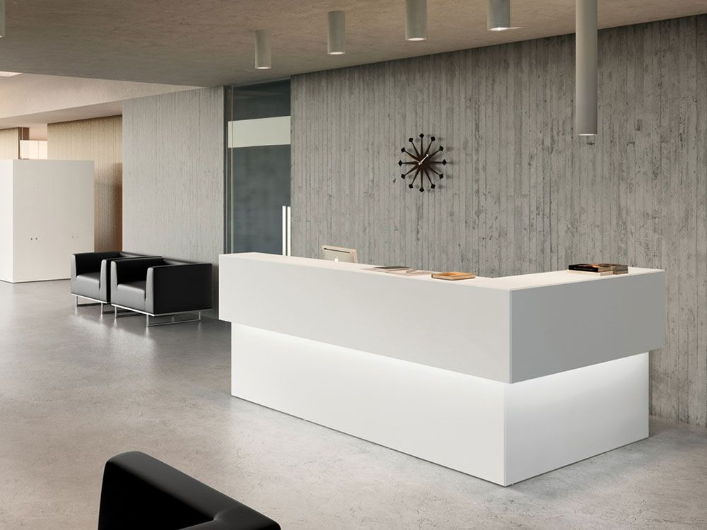
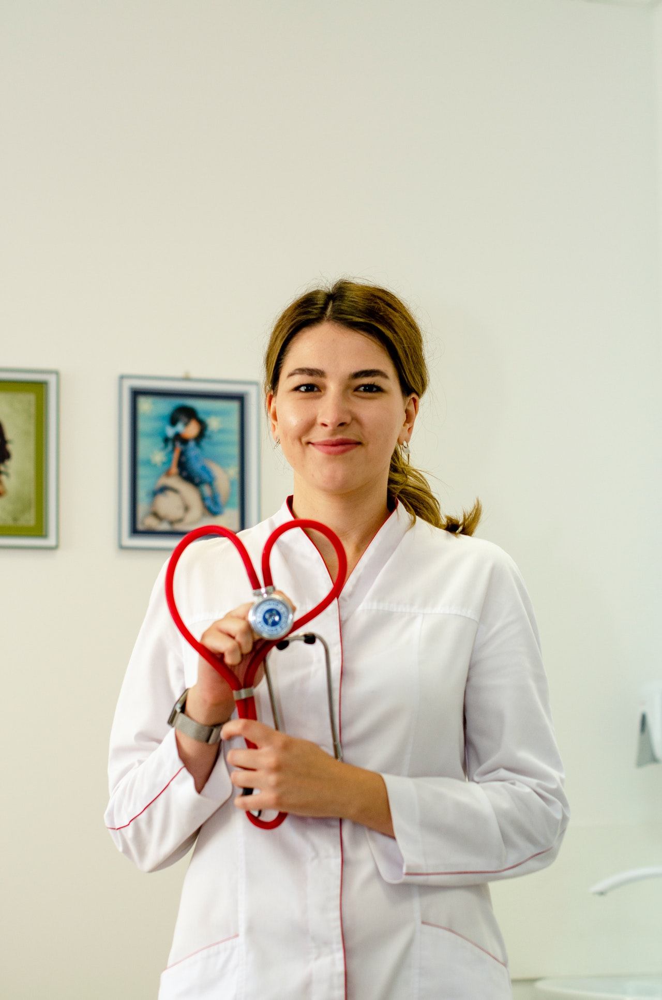

Russel Street Medical opened in 2020 and is located in Melbourne’s
CBD at 340 Russel Street Melbourne, just opposite The Old Melbourne Jail
and within walking distance of Melbourne Central Train Station.
We strive to help all of our patients with a focus on preventative
health care, a view to managing chronic health conditions with a holistic
approach, and with access to a wide range of specialist care providers when needed.
Under partnerships, we are able to offer RMIT students & staff discounted rates.
Consultation
Normal Fee
RMIT Member Fee
Medicare Rebate
Standard
$85.00
$60.50
$39.75
Long or Complex
$130.00
$91.00
$76.95
Opening times for the clinic are: Monday: 9am-6pm Tuesday: 9am-6pm Wednesday: 9am-6pm Thursday: 9am-6pm Friday: 9am-6pm Saturday: 9am-6pm Sunday: 9am-6pm

Who We Are
Dr. Abigale Laurentis
Abigale Laurentis completed her medical degree at the University of Queensland in 2013, where she
also obtained a Bachelor of Science in Biomedicine. Over her training and practice, Abigale has worked in a variety of clinical settings including
specialities at Latrobe Health.

Dr. Stephen Hill
Stephen Hill graduated from Auckland University in New Zealand in 2014, and obtained his
Fellowship from the Royal Australian College of General Practitioners in 2017. Over his training and practice, Stephen worked in internal medicine at the Royal Children's Hospital
Melbourne before transitioning to General Practice.
Ms Kiyoko Tsu
Kiyoko Tsu completed her Bachelor of Nursing at the Yong Loo Lin School of Medicine in Singapore in
2019. She is an accredited Nurse Immuniser and has worked in various hospitals within metropolitan
Melbourne.
Service Area
At Russel Street Medical, we make it easy for new patients to
register. Please come to our clinic on 340 Russel Street and have a
chat with our lovely reception about signing up to the clinic.
Our current patients can utilise our online booking system
to book vaccinations and blood tests! Please click the button
below to book.